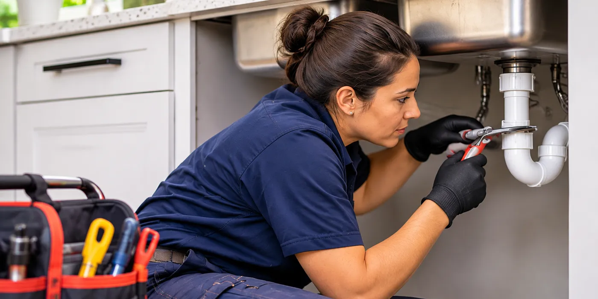

Toilet Repair in Leander, TX
Running toilets, leaks, weak flushes, and loose toilet repairs in Leander.
A toilet that refills every few minutes can waste water for a week before the sound becomes hard to ignore. Over a month, a worn flapper or fill valve can keep the tank cycling long after the bathroom is empty, and a water meter may continue moving even with every faucet off. We trace the refill cycle at the tank so the water loss does not keep building behind a closed door.
Water around the base causes a different kind of damage. A loose closet bolt, failed wax ring, or hairline crack can let each flush wet the flooring beneath the bowl, where moisture can soften subflooring and stain the ceiling below. We check the base, tank, supply line, and shutoff valve before replacing a part that may not be causing the leak.
A handle that sticks or a toilet that needs an extra flush may allow a short delay if the bowl stays stable and no water reaches the floor. Recurring running, leaking, rocking, or overflowing should not wait, because each flush can send more water through a failed seal, valve, or connection.
Toilet keeps running
We hear several versions of the same call: the toilet keeps running, the tank will not fill, the handle does nothing, or water leaks around the bottom of the toilet. A tank that hisses after flushing often points to a fill valve or flapper, while a tank that fills slowly can involve the shutoff valve, supply tube, or mineral buildup at the valve inlet. A weak flush can come from a low tank water level, a loose lift chain, or clogged rim holes under the bowl edge.
A toilet that rocks under weight, leaves water at the base, or sends the bowl level upward after flushing needs a different inspection than a noisy tank. We also check a toilet that flushes by itself, because water can slip past the flapper without leaving a puddle. Similar sounds and puddles can hide very different failed parts, so the labor and replacement parts depend on what we find at the fixture.
Tank and bowl inspection
We start at the shutoff valve and supply tube, then remove the tank lid and flush the bowl while watching the flapper, chain, overflow tube, fill valve, and tank water level. A refill and dye check commonly takes 10 to 20 minutes, while a leak at the base may require several flushes and a closer look at the closet bolts. We can also test water pressure at the nearby supply line; residential plumbing commonly operates within a 40 to 80 psi range.
We replace standard flappers, fill valves, handles, tank bolts, supply tubes, and shutoff valves during the same visit when the matching part is available and the toilet does not need removal. A cracked bowl, damaged flange, seized valve connection, or toilet that needs replacement can require a follow-up visit for the correct fixture, parts, and access work. If a blockage sits beyond the toilet trapway, we explain that before any separate drain work begins.
Shutoff valve and tank parts
The part inside the tank changes the scope of a repair. A flapper or lift chain usually allows direct access under the tank lid, while a corroded tank bolt, split overflow tube, or damaged fill valve can require more disassembly and careful handling of porcelain. Older toilets may also use discontinued flush valves or nonstandard handle assemblies that need matching parts.
Access at the shutoff valve matters as much as the tank hardware. A valve that turns freely lets us isolate the toilet before working on the supply tube, but a seized valve, corroded compression nut, or tight wall opening adds work around the water line. We also account for a loose bowl, a failed wax ring, flooring around the base, and any replacement part that must be ordered before we can finish the repair.
Tank model and bathroom
Before calling, check which bathroom holds the toilet and whether water is running into the bowl or onto the floor now. We can use the brand name and model marking from inside the tank, beneath the tank lid, or on the porcelain to bring a closer match for the flapper, handle, or fill valve.
Note whether the bowl rocks, the handle sticks, the tank refills on its own, or the flush sends water toward the rim. Tell us if the shutoff valve sits behind the bowl, inside a cabinet opening, or near finished flooring, since that access affects the valve work. A photo of the tank interior and the supply connection can help us identify the parts before the visit. Call LK Plumbing Company Leander at (512) 563-3818 before a running tank wastes more water or a base leak reaches the flooring.
When we are open
Outside these hours, leave a message and we will call back.
Next: pipe leak repair, or back to the home page.